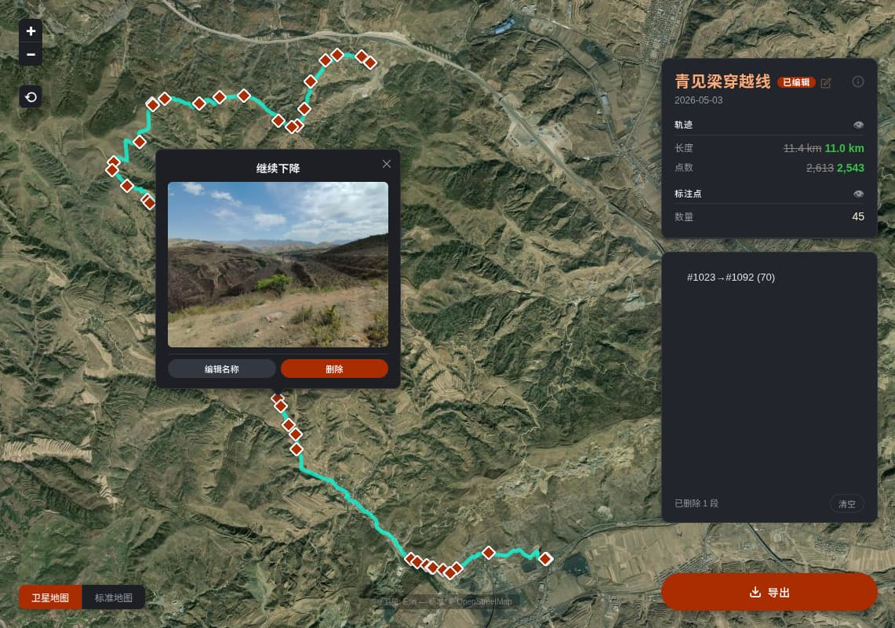

户外 · 轨迹 · 编辑
为你的每一步
留下精准印迹
一个轻量、纯粹的 Web 轨迹编辑器。上传两步路导出的 KMZ 文件，在地图上直观编辑轨迹段、管理标注点，导出干净的轨迹文件。
核心功能
一切所需，尽在地图之上
轨迹段删除
在地图上依次点击两个点，选中一段轨迹后确认删除。自动重新计算剩余距离与点数。支持撤销单段或清空全部。
标注点管理
查看、重命名或删除轨迹中的标注点。菱形标记清晰展示每个标注位置，编辑自动持久化到浏览器本地存储。
双地图切换
Esri 高清卫星影像与 OpenStreetMap 标准地图一键切换。卫星图层叠加地名标注，地形细节一目了然。
一键导出 KMZ
编辑完成后导出完整 KMZ 文件，包含所有媒体附件。轨迹名称可自定义，下载即用，无需额外处理。
三步开始
简单到只需拖放
01
上传轨迹
将两步路 App 导出的 .kmz 文件拖入地图，轨迹即刻渲染，标注点自动加载。
02
地图编辑
在地图上点击轨迹选择范围，确认删除。编辑标注点名称，移除不需要的标记。所有操作所见即所得。
03
导出文件
点击导出按钮，下载编辑后的 KMZ 文件。文件包含完整的轨迹数据、标注点信息和关联媒体。
应用预览
直观的轨迹编辑体验
深色山野主题，霜玻璃面板，地图即画布。

准备好编辑你的轨迹了吗？
无需注册、无需安装依赖以外的任何东西。克隆仓库，一行命令即可启动。
$ python3 -m kmz_editor.server
返回顶部